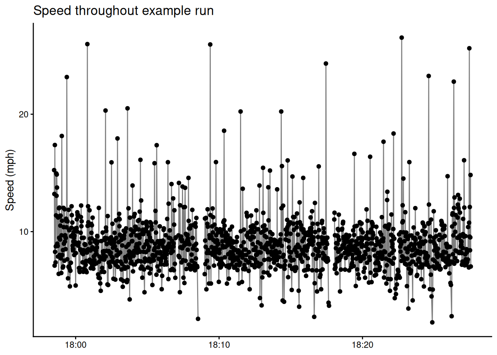

This post is a casual case study in speeding up R code. I work through several iterations of a function to read and process GPS running data from Strava stored in the GPX format. Along the way I describe how to visualize code bottlenecks with profvis and briefly touch on fast compiled code with Rcpp and parallelization with furrr.
The problem: tidying trajectories in GPX files
I record my runs on my phone using Strava. Strava stores the GPS recordings in GPX files, which are XML files that follow some additional conventions. They start with some metadata and then contain a list of GPS readings taken at one second intervals with longitude, latitude, elevation and timestap information. I wanted to approximate my speed at each timestamp in the GPS record, as well as my distance traveled since the previous GPS recordings.
Below I have an example of a GPX file that contains three GPS readings. First I create a vector that contains the names off my GPX files, and then I subset to the files that contain running data. I choose to work with the third run as a canonical example, and show a subset of the recording with three GPS readings.
library(tidyverse)library(here)# file contain run dataact_files <-dir(here::here("post", "2018-06-15_speeding-up-gpx-ingest-profiling-rcpp-and-furrr", "2018-04-17-activities-alex"),full.names =TRUE)run_files <- act_files[str_detect(act_files, "Run")]# example file we'll work withfname <- run_files[3]# subset of exampleall <-read_lines(fname)mini_idx <-c(1:20, 5897:5899)cat(all[mini_idx], sep ="\n")
The part we want is in the <trkseg> tags. We’d like to turn this into a tidy dataframe where each row represents one GPS reading and the columns contain information like speed, distance, traveled, elevation gained, etc.
GPX reader version 0: using plotKML::readGPX
Note
plotKML was archived from CRAN on 2022-04-18 and the archived version isn’t easy to install. I’ve pulled the source for the readGPX() function and inserted it below to avoid depending on the plotKML package as of 2022-04-29.
We want to compare location at \(t\) and \(t - 1\), so we create a lagged column of longitudes and latitudes. We put longitude and latitude together into a vector to play well with raster::pointDistance, which we’ll use to compute the great circle distance between two points.
lagged <- retyped |>mutate(x =map2(lon, lat, c), # create lagged position, this means thex_old =lag(x), # first row isn't completet_old =lag(time) ) |>slice(-1) # remove incomplete first rowlagged
It turns out this data is not contiguous. Strava has a feature called autopause which detects pauses in runs (for example, at a stoplight), and GPS readings during paused periods are not include in the GPX files1. GPS readings typically happen once every second. I plotted the time gaps between readings and realized that time gaps greater than three seconds between two GPS recordings indicated a pause. This lets me break the run down into a series of contigous segments:
segmented <- lagged |>mutate(rest =as.numeric(time - t_old), # secondsnew_segment =as.numeric(rest >3),segment =cumsum(new_segment) ) |># don't want t_old to be from previous segmentgroup_by(segment) |>slice(-1)segmented
We can quickly visualize instantaneous speed throughout the run:
ggplot(useful, aes(time, speed, group = segment)) +geom_point() +geom_line(alpha =0.5) +labs(title ="Speed throughout example run",y ="Speed (mph)" ) +theme_classic() +theme(axis.title.x =element_blank())

We can see two short pauses present in the run at around 18:08 and 18:17.
We’re going to use the code above a whole bunch, so we wrap it up into a helper function. I’m not sure that raster::pointDistance is the best option for calculating the distance between two points, so we use a dist_func argument to make it easy to switch out.
We can use profvis::profvis to create an interactive visualization of how long it takes to read the example file.
library(profvis)profvis(read_gpx0(fname))
In the default view, the horizontal axis represents time and the box represents the call stack. All the boxes above plotKML::readGPX are functions called by plotKML::readGPX. Here it seems like plotKML::readGPX takes about 400 milliseconds to run. So about half the time is spent reading in the file, and half calculating metrics. Most of the time calculating metrics is in raster::pointDistance, which is fairly up the call stack - you may have to click and drag the plot to see it.
GPX reader version 1: no more plotKML::GPX
Then I broke my R library and couldn’t use plotKML::readGPX for a little while. Since GPX files are XML files, I used the xml2 package as a replacement. xml2 has a function as_list that let me treat the XML as an R list. We extract the relevant portion of the list and purrr::map_dfr each GPS recording into a row of a tibble.
Our results are still as expected, which is good. We profile again to see if we’ve done any better, which we have. Now we’re at about 1.5 seconds instead of 2.5 seconds.
profvis(read_gpx2(fname))
I needed to this for about fifty files though, so this was still slow enough to be somewhat frustrating. Now xml2::as_list is really killing us.
GPX reader version 3: now with more xml2
Luckily, we can use xml2 to manipulate the XML via a fast C package instead. For this next part I tried functions exported by xml2 until they worked and occasionally read the documentation.
read_gpx_xml <-function(fname) {# get the interested nodes run_xml <-read_xml(fname) trk <-xml_child(run_xml, 2) trkseg <-xml_child(trk, 2) trkpts <-xml_children(trkseg) # nodeset where each node is a GPS reading# get the longitude and latitude for each node latlon_list <-xml_attrs(trkpts) latlon <-do.call(rbind, latlon_list)# get the time and elevation for each node ele_time_vec <-xml_text(xml_children(trkpts)) ele_time <-matrix(ele_time_vec, ncol =2, byrow =TRUE)colnames(ele_time) <-c("ele", "time")as_tibble(cbind(latlon, ele_time))}read_gpx3 <-function(fname) { gps_df <-read_gpx_xml(fname) |>select(lon, lat, everything())get_metrics(gps_df)}result_3 <-read_gpx3(fname)expect_equal(expected, result_3)
Again we see if there’s anywhere else we can speed things up:
profvis(read_gpx3(fname))
We’re way faster, taking less than half a second! Now the most time is spent on raster::pointDistance, which we call a ton of times. What does pointDistance do? It takes two pairs (lat1, lon1) and (lat2, lon2) the distance between them2.
GPX reader version 4: drop into Rcpp
Next I Googled how to perform this calculation myself and found this and this. The Rcpp implementation looks like:
#include <Rcpp.h>usingnamespace Rcpp;// [[Rcpp::export]]double haversine_dist(const NumericVector p1,const NumericVector p2){double lat1 = p1[0]* M_PI /180;double lon1 = p1[1]* M_PI /180;double lat2 = p2[0]* M_PI /180;double lon2 = p2[1]* M_PI /180;double d_lat = lat2 - lat1;double d_lon = lon2 - lon1;double a = pow(sin(d_lat /2.0),2)+ cos(lat1)* cos(lat2)* pow(sin(d_lon /2.0),2);double c =2* asin(std::min(1.0, sqrt(a)));return6378137* c;// 6378137 is the radius of the earth in meters}
The haversine distance is fast to calculate at the cost of some small error, which we can see below:
Now it takes only about 0.1 seconds, but the result isn’t accurate enough anymore. I wasn’t in the mood to implement a more precise great circle distance calculation, but hopefully this illustrates the general principle of dropping into Rcpp and also why it’s important to test when profiling.
Comparing the various GPX readers
Now we can compare how long each version takes using the bench package.
library(bench)mark(read_gpx0(fname),read_gpx1(fname),read_gpx2(fname),read_gpx3(fname),read_gpx4(fname),iterations =5, # how many times to run everything. 5 is very low.relative =TRUE,check =FALSE# since readgpx4 isn't right, will error without this)
Here timings are relative. We see that read_gpx4 is about ten times faster than read_gpx1 and two times faster than read_gpx0.
Embarrassing parallelization with furrr
In the end, I needed to do this for about fifty files. Since we can process each file independently of the other files, this operation is embarrassingly parallel. I actually wanted to use this data, so I didn’t use the C++ haversine distance function. We can write with a single map call to process all the files at once:
Note that other than loading furrr and calling plan(multisession) all we’ve had to do to get parallelism is to call furrr::future_map_dfr, which has exactly the same API as purrr::map_dfr. My computer has twelve cores, meaning there’s a maximum possible speedup of twelve.
# A tibble: 2 × 6
expression min median `itr/sec` mem_alloc `gc/sec`
<bch:expr> <dbl> <dbl> <dbl> <dbl> <dbl>
1 sequential 4.60 4.71 1 NA 3.85
2 parallel 1 1 4.36 NA 1
Wrap Up
This was a low stakes exercise in speeding up R code. By the time I’d written all of these it would have been several hundred times faster to use read_gpx0 and just save the results to a .rds file. Still, it was fun to work through the profiling workflow and I look forward to enterprising strangers on the internet pointing out places where things can get faster still.
See also gpx for a more modern approach to reading .gpx files in R that did not exist at the time I originally wrote this blogpost.
Footnotes
It took me a two months to realize this, mostly because I didn’t plot enough of the data. If you’re curous how Strava detects paused movement, you can read more here. It seems to involve more if-statements than fun models.↩︎
We can’t calculate the distance using the L2 norm because longitude and latitude are spherical coordinates, not Euclidean coordinates.↩︎